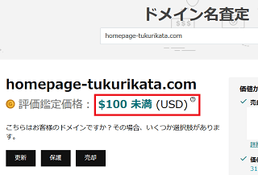

独自ドメインの取得方法
独自ドメインを取得するのが先か、レンタルサーバーを契約するのが先かでいえば、サーバーをチェックしてから独自ドメインを取得するとよいかもしれません。
といいますのも、レンタルサーバーを契約すると独自ドメインを無料で１個プレゼントされるケースもあるからです。
■レンタルサーバーの比較情報はこちら
けれども、ドメインの専門会社で取得する場合と比較すると、レンタルサーバー会社でついでに取得する場合は料金が高めになる傾向があります。加えて、whois代理公開やドメイン移管などの利便性の面でも差があります。
- サーバー会社でついでに取得 → 価格は割高、設定は簡単。
- ドメインの専門会社で取得 → 価格は安いが設定は複雑。機能充実。
そのような理由で、もし自分で設定できる場合は、サーバー契約とは別にドメインの専門業者で取得するのが一番安上がりです。
現在のレンタルサーバーはどこでも「持ち込みドメインOK」となっているため、ドメインの取得とサーバー契約を別々にしても何ら問題はありません。
例えば、さくらインターネットでサーバー契約をして、このさくらでは独自ドメインを取得せず、格安のバリュードメインで取得して利用することもできます。
このドメインの設定方法は、各社のマニュアルを参照すればそれほど難しくもないです。
→ 独自ドメインの設定方法
また、取得したドメインで自分だけのメールアドレスを利用することもできます。
→ 独自ドメインでのメールアドレスの作り方
独自ドメインを取得する際の人気の格安会社
当サイトの管理人はバリュードメインやムームードメイン、Godaddy、livedoor、bigrock、FC2、お名前ドットコムなどで合計300個程度の独自ドメインを取得していますが、お名前.comやバリュードメインがおすすめです。
いずれも月額ではなく、「１年間での更新費用」で千円前後が一般的です。
お名前.com
GMOグループで有名なドメイン専門の取得事業者です。ドメインのリセラ（再販業者）ではなく、レジストラ本体なので信頼性が抜群です。個人のほか、法人でco.jpなどを取得する際にもこちらを選択されるとよいでしょう。バリュードメイン
デジロック運営の格安サービスで機能が充実しており、ユーザー間でのオークション機能なども利用できます。同社の格安サーバーであるXREAやCORESERVERとの連携がしやすいです。Google Domains
以前まで日本では利用できませんでしたが、最近、日本でも利用できるようになりました。ドメインの種類にもよりますが、whois代行も無料で利用することができます。エックスサーバードメイン
ドメイン取得については最近出来たサービスですが、サーバー運営ではエックスサーバーで古くから定評のある会社です。WHOIS代理公開や無料レンタルサーバーも利用できます。ムームードメイン
マニュアルが充実していて初心者安心のＧＭＯペパボ(株)運営による人気サービスです。同社の格安サーバーのロリポップやヘテムルとの連携も簡単です。FC2ドメイン
利用料金が安く、whois代理公開なども問題なく利用できます。FC2サービスとの連携がよく、他社サーバーでも問題なく設定できます。ペイジーなどでポイントをあらかじめ購入しておけば、為替レートではなく「1ポイント=1円」で計算されます。NameSilo
日本語には対応していませんが、円高の際には費用を安く抑えることができます。whois代理公開も無料です。支払いにはPaypalを利用するとよいでしょう。
2015年の2月中旬以降、円安の影響により各社で大幅な値上げが実施されています。以前まではバリュードメインが格安でしたが、2018年現在、どの事業者でも価格差はそれほどなくなってきました。
どのみち価格差がなくなってきたため、当サイト運営者は安心感のあるお名前.comをメインに利用しています。大量に取得していてコストを抑える場合、NameSiloやFC2ドメインがおすすめですが、使い勝手でいえば、お名前.comやエックスサーバードメインが使いやすいです。
～ whois代理公開の有無 ～
ドメインを取得する際、whoisに登録者情報（氏名・住所など）が公開されることになりますが、上記のドメイン専門事業者を利用すれば、whois情報を無料で代理公開してくれます。
この代理公開を利用すれば、事業者名義でwhoisが公開されるため、あなたの個人情報が公開される心配はありません。
→ Whois代理公開で個人情報を保護
このwhois代理公開の機能はGodaddyなどの海外サイトではほぼ有料ですし、国内でも上記の事業者以外では設定できないケースも多いです。できるだけ、代理公開が無料の会社を利用されるとよいでしょう。
ドメインネームの選び方
.comや.net、.org が圧倒的に多い！
個人でドメインを取得する際は「.com」や「.net」がおすすめです。また、サークルなどの非営利組織の場合は「.org」でもよいかもしれませんが、他にも「.jp」や「.biz」、「.info」などに人気があります。ただし、普段ネットで検索していてあまり見かけないものは避けた方がよいでしょう。
インターネット上に１億以上存在するドメインのうち、圧倒的に多いのが「.com」で、次に「.net」や「.org」の順となっており、この３種類でその大半を占めています。
もし数年後、取得したドメインの人気が高くなった際に手放すことになったとしても、この３種類ならオークションサイトなどで世界中の人から入札が入る可能性もあります。
一方、jpドメインなどの国別トップレベルドメインの場合、日本人以外はほぼ取得しませんので、売却するにはあまり人気がないかもしれませんが、日本での信頼性は高い傾向にあります。
法人向けに最適な co.jp や or.jpドメイン
法人でドメインを取得する場合には、属性型JPドメインの「.co.jp」や「.or.jp」を選択されるとよいでしょう。これら属性型JPドメインは法人の登記情報を確認した上で、その組織でひとつしか取得できないドメインのため、取得する際のハードルが高くなります。
その為、個人で気軽に大量に取得できる「.com」や「.net」とは違い、「.co.jp」や「.or.jp」なら転売目的で取得されるケースが少なく、実態のあるサイトばかりなので信頼性が非常に高いです。
一般的な営利企業なら「.co.jp」、医療関係などの非営利法人でしたら「.or.jp」を選択されるとよいでしょう。
SEO対策を考慮に入れたドメインネーム選び
ドメインを取得する際はサイト内容と関連していて短めの方が利便性がよいです。携帯のメールアドレスの場合、迷惑メール対策で適当な文字列を入力する方もいますが、ホームページアドレスの場合は誰にでもすぐ察しが付くわかりやすい名前にしましよう。
また、関連するキーワードが入っていた方がSEO対策の面では有利です。
例えば、当サイトの場合、多少長いURLになってしまいましたが、URLに「ホームページ」の文字を入れています。
www.homepage-tukurikata.com
URLにこれらのキーワードが入っていると「このサイトはホームページに関連するサイト」と認識されるため、結果として検索エンジンで上位に表示される確率が高くなります。
ただし、当サイトではハイフンを入れてますが、ドメイン名の文字列の価値としてはハイフンを入れない方がかっこよいでしょう。
最近では構造化データにより、検索結果のパンくずリストで「https://www.homepage-tukurikata.com › ドメイン ▾」のような表示がされますが、スペースの関係上、ドメイン名が長いとこの表示が省略されてしまうこともあります。
Godaddyでの当ドメインの評価額は100ドル未満となっており、おそらくは千円とか２千円ぐらいかと思いますが、検索エンジン対策のみを考えて長くしてしまうと残念なドメイン名になってしまいます。

ポイントは「.com」などの海外でも人気のドメインで、かつハイフンがなく短めでありながら、検索回数の多い関連キーワードを含みつつ、それでいてクールでかっこいい名前にすることをおすすめします。